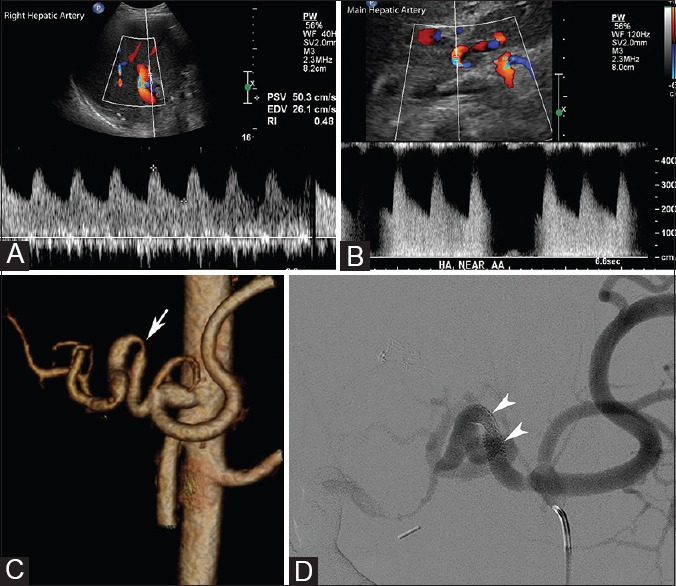
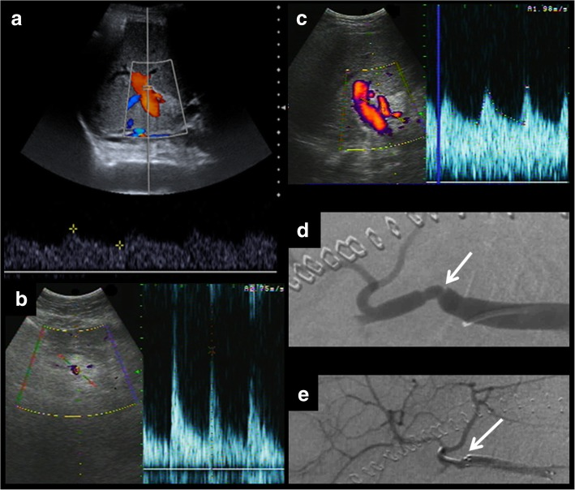
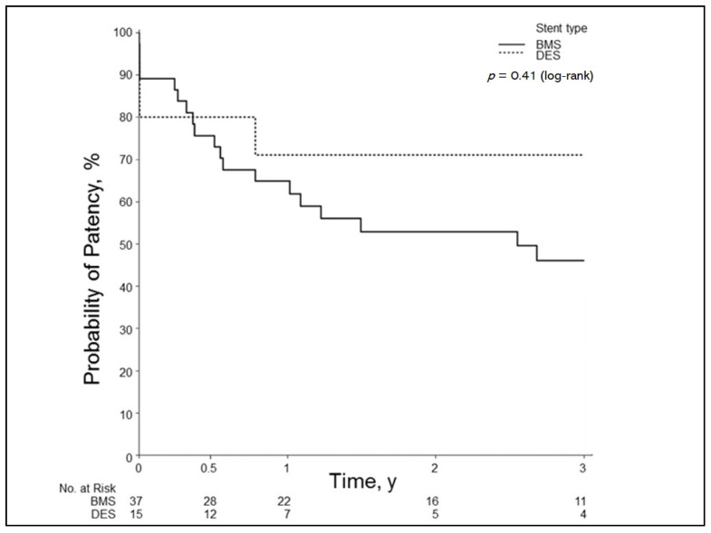

1861 — Hẹp động mạch gan sau ghép gan / Hepatic artery stenosis after liver transplantation
Tags: pattern:hep pattern:tardus-parvus pattern:giam-tuoi-mau-gan vung:gan vung:o-bung score:PSV-200 score:RI protocol:Doppler-sieu-am protocol:CTA-bung protocol:DSA incidentaloma:khong
Mức chắc chắn (certainty): tổng hợp y văn (literature synthesis) — 1 bài tổng quan hình ảnh mạch sau ghép gan có đủ Doppler – CT – DSA (Insights Imaging 2019, PMC6694376, CC BY 4.0), 1 bài ôn Doppler hậu phẫu kinh điển của Indian J Radiol Imaging 2014 (PMC4247505, CC BY-NC-SA 3.0), 1 đoàn hệ can thiệp 43 thủ thuật ở 40 bệnh nhân (CVIR Endovasc 2024, PMC11032299, CC BY 4.0), 1 đoàn hệ 52 ca đặt stent so sánh stent phủ thuốc với stent kim loại trần (J Clin Med 2021, PMC7863956, CC BY 4.0) và dữ liệu nhi khoa của Cardiovasc Intervent Radiol 2023 (PMC10616219, CC BY 4.0). Nhóm không có bệnh nhân của mình; chỗ các nguồn lệch ngưỡng (RI < 0,5 hay < 0,55) được ghi rõ là mâu thuẫn nguồn, không chọn bừa.
Câu chốt: sau ghép gan, động mạch gan là mạch duy nhất nuôi đường mật — hẹp (hepatic artery stenosis, HAS) không chỉ làm thiếu máu nhu mô mà còn gây hẹp đường mật thiếu máu (ischemic cholangiopathy), thứ chỉ xuất hiện vài tuần–vài tháng sau đó. Ba số phải thuộc: (1) biến chứng mạch gặp ~7% ở ghép gan người hiến chết và ~13% ở ghép gan sống (PMC6694376); (2) hẹp tại miệng nối chiếm 2–13%, và chẩn đoán Doppler dựa vào PSV tại chỗ hẹp > 200 cm/s, RI hạ lưu < 0,5–0,55**, **thời gian tăng tốc (SAT) > 80 ms; (3) hình màu bình thường không loại trừ hẹp — phải lấy phổ Doppler, vì phổ mới là thứ thay đổi (PMC6694376; PMC4247505).
1. Tổng quan bệnh học – cơ chế hình ảnh
1.1 Vì sao hẹp động mạch gan là "bệnh của đường mật"
- Gan có hai nguồn máu: tĩnh mạch cửa ~75% lưu lượng nhưng chỉ ~50% oxy; động mạch gan ~25% lưu lượng nhưng ~50% oxy. Đường mật trong gan không có tuần hoàn bàng hệ từ tĩnh mạch cửa — nó sống bằng đám rối mao mạch quanh ống mật (peribiliary vascular plexus) nuôi bởi động mạch gan. Vì vậy hẹp/tắc động mạch gan → hoại tử biểu mô đường mật từng đoạn → hẹp, giãn, ứ mật, sỏi, và về sau xơ gan đường mật thứ phát (PMC6694376).
- Cơ chế hẹp tại miệng nối: miệng nối động mạch là chỗ khâu tận–tận với cỡ mạch 2–5 mm, bị kẹp mạch (clamp injury), xoắn/gập (kinking), lệch cỡ, và đáp ứng tăng sinh nội mạc (intimal hyperplasia) — mô học của stent lấy ra cho thấy dày nội mạc đúng tại miệng nối (PMC7863956, Fig. 4). Đây là lý do hẹp thường khu trú, ngắn, đúng chỗ khâu, khác hẹp xơ vữa lan tỏa.
- Vì sao hẹp ĐỘNG MẠCH lại biểu hiện bằng men gan và vàng da: thiếu máu nhu mô gây tăng transaminase (thường ALT/AST tăng nhẹ–trung bình, không tăng vọt như tắc mạch cấp), còn thiếu máu đường mật gây bilirubin/ALP tăng và hẹp đường mật — nên bệnh nhân có thể được chẩn đoán nhầm là thải ghép cấp hoặc hẹp đường mật đơn thuần. Trong đoàn hệ can thiệp, chỉ định can thiệp là HAS + tăng transaminase (PMC11032299).
1.2 Vật lý Doppler: tại sao phổ mới là "chứng cứ"
| Vị trí đo | Hiện tượng vật lý | Ngưỡng thực hành |
|---|---|---|
| Tại chỗ hẹp | Tiết diện giảm → theo phương trình liên tục, vận tốc tăng; dòng rối gây aliasing trên màu | PSV > 200 cm/s (PMC6694376; PMC4247505) |
| Trước chỗ hẹp | Áp lực tăng để vượt qua hẹp → trở kháng tăng | RI > 0,8 (PMC6694376) |
| Sau chỗ hẹp | Mất áp lực → giãn tiểu động mạch bù trừ → trở kháng giảm, dốc tâm thu chậm | RI < 0,5–0,55**, **SAT > 80 ms, dạng parvus–tardus (hai nguồn ghi 0,5 và 0,55) |
| Độ nhạy/độ đặc hiệu của dấu hiệu gián tiếp | Phụ thuộc huyết động, không đặc hiệu nguyên nhân | Se 73–83%, Sp 60–73% (PMC4247505) |
- Vì sao dấu hiệu gián tiếp không đủ: cùng một phổ tardus–parvus xuất hiện khi hẹp ở gần hoặc khi tắc động mạch gan (HAT) có tuần hoàn bàng hệ — bàng hệ nuôi ngược dòng vào động mạch trong gan tạo phổ chậm, giống hệt hẹp. Vì vậy tardus–parvus không loại trừ HAT, và ngược lại màu bình thường không loại trừ hẹp (PMC4247505).
- Nhiễu sinh lý 3 ngày đầu: ngay sau ghép, RI > 0,8 gặp ở nhiều bệnh nhân do phù mô ghép và tăng áp lực ổ bụng, tự hết; đọc đơn độc ngày 1–3 dễ mổ lại oan (PMC6694376).
1.3 Dịch tễ và ngưỡng định lượng nằm lòng
| Đại lượng | Số liệu | Nguồn |
|---|---|---|
| Biến chứng mạch sau ghép gan | ~7% (người hiến chết) · ~13% (ghép sống) | PMC6694376 |
| Hẹp tại miệng nối động mạch gan | 2–13% bệnh nhân | PMC6694376 |
| PSV tại chỗ hẹp | > 200 cm/s | PMC6694376; PMC4247505 |
| RI hạ lưu | < 0,5 (một số nguồn < 0,55) | PMC6694376; PMC4247505 |
| Thời gian tăng tốc tâm thu (SAT) | > 80 ms | PMC4247505 |
| RI trước hẹp | > 0,8 | PMC6694376 |
| Tỉ lệ hẹp lại sau can thiệp nội mạch | Xem mục 4 (stent BMS 46% còn thông ở 3 năm) | PMC7863956 |
2. Mẫu hình + chẩn đoán phân biệt theo vị trí (gamut)
- Hẹp đúng miệng nối (anastomotic HAS): hẹp ngắn, đối xứng hoặc lệch, PSV tăng tại chỗ, hạ lưu tardus–parvus; gặp sớm (tuần–tháng) hoặc muộn (tăng sinh nội mạc). Là thể hay gặp nhất.
- Hẹp do gập/xoắn mạch (kinking): mạch quá dài, góc gấp > 90°, hẹp khi đổi tư thế; trên CTA thấy quai mạch gấp. Stent đặt tại chỗ gập dễ gãy và hẹp lại, nên CTA phải mô tả đoạn cong; trong đoàn hệ PMC11032299, 4 ca hẹp sát đoạn cong > 90° được xếp vào nhóm cân nhắc can thiệp ngoài gan thay vì can thiệp trực tiếp.
- Hẹp đa ổ (multifocal): phải đo và xử lý từng ổ, không chỉ ổ gần nhất (PMC6694376, Fig. 5).
- Tắc động mạch gan (HAT): không có phổ trong lòng mạch, hoặc tardus–parvus do bàng hệ; CTA xác nhận khuyết thuốc; cấp cứu vì nguy cơ hoại tử đường mật/gan.
- Cướp máu lách (splenic artery steal syndrome, SASS): động mạch lách lớn, lưu lượng động mạch gan thấp, hẹp không rõ; xử trí nút động mạch lách — phân biệt với hẹp thật bằng CTA/DSA và đáp ứng sau nút (bài 1825).
- Giả phình (pseudoaneurysm): túi thuốc giữ hình ở thì muộn, có "yin–yang" trên Doppler; nguy cơ vỡ/rò mật–máu — không phải hẹp.
- Hẹp tĩnh mạch cửa / tắc dòng ra: khác hệ, nhưng cùng bệnh cảnh "men gan tăng sau ghép" (bài 1827).
3. Bảng so sánh phân biệt (ma trận đối chiếu)
| Thực thể (entity) | Hình ảnh điển hình (US/CT/DSA) | Chốt vào (rule-in) | Chốt loại (rule-out) | Gợi ý xác nhận |
|---|---|---|---|---|
| Hẹp miệng nối ĐM gan (HAS) | Hẹp ngắn đúng chỗ khâu; PSV > 200 cm/s tại chỗ; hạ lưu RI < 0,5–0,55, SAT > 80 ms; CTA thấy hẹp + tái tạo | PSV > 200 cm/s + tardus–parvus hạ lưu | Phổ hạ lưu bình thường không loại trừ hẹp nhẹ; màu bình thường không loại trừ | Doppler lặp + CTA; DSA đo chênh áp khi nghi ngờ |
| Huyết khối ĐM gan (HAT) | Không có phổ trong lòng mạch; tardus–parvus có thể vẫn còn nhờ bàng hệ; CTA khuyết thuốc | Mất phổ trong lòng mạch + khuyết thuốc CTA | Có phổ trong lòng mạch tại miệng nối → không phải tắc hoàn toàn | CTA/DSA cấp; can thiệp tái thông |
| Cướp máu lách (SASS) | ĐM lách giãn, lưu lượng ĐM gan thấp, RI thấp; hẹp không tương xứng | ĐM lách > ĐM gan + RI thấp hồi phục sau nút lách | Hẹp khu trú rõ tại miệng nối → HAS thật | DSA + nút lách thử; Doppler sau nút |
| RI cao sinh lý 3 ngày đầu | RI > 0,8 nhưng phổ còn dốc tâm thu nhanh, hết sau vài ngày | Hết trong 72 giờ, không có hẹp trên CTA | RI cao kéo dài + SAT dài → nghĩ hẹp/tắc | Doppler lặp ngày 3–7 |
| Giả phình ĐM gan | Túi thuốc giữ hình, "yin–yang"; không hẹp lòng mạch | Túi thuốc tồn tại thì muộn | Không có túi → không phải giả phình | CTA/DSA; can thiệp (coil/stent) |
4. Protocol chụp + can thiệp
4.1 Lịch và kỹ thuật siêu âm Doppler
- Thời điểm: nhiều trung tâm chạy Doppler 24 giờ, 48 giờ, ngày 7 sau ghép rồi 1, 3, 6, 12 tháng và khi men gan tăng (PMC6694376 mô tả lịch này ở đơn vị tác giả).
- Kỹ thuật: đầu dò convex 2–5 MHz; góc Doppler ≤ 60°; lấy phổ tại miệng nối, 1–2 cm trước và sau, cả động mạch gan phải và trái; ghi PSV, EDV, RI, SAT; cửa sổ mẫu nhỏ đặt đúng lòng mạch.
- Bắt buộc lấy phổ kể cả khi màu bình thường — đây là điểm bị bỏ sót nhiều nhất (PMC6694376, Fig. 4a–c).
4.2 Khi Doppler bất thường
flowchart TD
A[Doppler sau ghép gan: PSV > 200 cm/s hoặc RI < 0,5 hoặc SAT > 80 ms] --> B{Có phổ trong lòng mạch tại miệng nối?}
B -->|Không| C[Nghĩ HAT: CTA/DSA cấp]
B -->|Có| D[CTA bụng thì động mạch, MPR mỏng]
D --> E{Hẹp > 50% hoặc có triệu chứng/men gan tăng?}
E -->|Không| F[Theo dõi Doppler 1–3 tháng]
E -->|Có| G[DSA + đo chênh áp]
G --> H{Hẹp ngắn, mạch thẳng?}
H -->|Có| I[Nong bóng ± stent]
H -->|Không: gập > 90° hoặc hẹp dài| J[Cân nhắc can thiệp ngoài gan / mổ lại]
I --> K[Doppler 24–48 giờ + 1 tháng]
- CTA bụng thì động mạch (lát 0,6–1 mm, MPR/3D) để xác nhận vị trí, độ dài, độ cong và loại trừ giả phình/HAT. Không dùng CTA thay Doppler để sàng lọc vì liều và thuốc cản quang.
- DSA là tiêu chuẩn vàng: xác định hẹp, đo chênh áp qua chỗ hẹp và điều trị ngay trong cùng thì. Trong đoàn hệ 43 thủ thuật, tất cả bệnh nhân được can thiệp khi có hẹp + tăng transaminase (PMC11032299).
4.3 Kết quả can thiệp — số liệu để tư vấn
| Can thiệp | Kết quả | Nguồn |
|---|---|---|
| Nong bóng/stent trong gan (HAI): 21 thủ thuật/18 bệnh nhân | Tử vong liên quan gan 1 năm 10% (2/21); biến chứng 29% (6/21) | PMC11032299 |
| Can thiệp ngoài gan (EHAI, nút mạch lách…): 27 thủ thuật/22 bệnh nhân | Tử vong liên quan gan 1 năm 0% (0/27); biến chứng 4% (1/27); khác biệt biến chứng p = 0,015 | PMC11032299 |
| Stent phủ thuốc (DES), 52 ca | Thông 6 tháng/1/2/3 năm: 80/71/71/71% | PMC7863956 |
| Stent kim loại trần (BMS), 52 ca | 76/65/53/46% (p = 0,41 so với DES) | PMC7863956 |
| DES ở mạch nhỏ 3,5–4,5 mm | 93/75/75/75% | PMC7863956 |
| BMS ở mạch nhỏ 3,5–4,5 mm | 60/60/50/38% | PMC7863956 |
Đọc số cho đúng: đây là nghiên cứu hồi cứu, không ngẫu nhiên; DES "trông tốt hơn" nhưng p = 0,41 (toàn bộ) và p = 0,19 (mạch nhỏ) — không đủ bằng chứng để nói DES hơn BMS. Điều chắc chắn: stent ở mạch 3,5–4,5 mm mất thông dần theo thời gian, nên phải theo dõi Doppler dài hạn (PMC7863956).
4.4 Can thiệp ở trẻ
- Ở trẻ, động mạch gan nhỏ hơn, co thắt do can thiệp mạnh hơn và gập mạch hay gặp sau ghép mảnh ghép chia; loạt nhi khoa cho thấy can thiệp nội mạch vẫn khả thi nhưng phải chọn cỡ bóng/stent theo đường kính đo trên CTA, và hẹp tái phát là vấn đề chính (PMC10616219). Chi tiết kỹ thuật nong/stent nhi khoa nằm ngoài phạm vi bài này — ghi là chưa đủ nguồn để đưa ngưỡng riêng cho trẻ.
5. Biến thể bình thường và cạm bẫy
- RI > 0,8 trong 3 ngày đầu là sinh lý (phù ghép, tăng áp ổ bụng) — không chẩn đoán hẹp/tắc nếu phổ còn dốc nhanh và CTA không có hẹp (PMC6694376).
- Màu bình thường + phổ bất thường: hẹp nhẹ–trung bình có thể không gây aliasing rõ, nên bỏ qua phổ là bỏ chẩn đoán (PMC6694376, Fig. 4).
- Tardus–parvus không loại trừ HAT: bàng hệ sau tắc có thể tạo phổ chậm trong gan; muốn loại HAT phải thấy phổ trong lòng mạch tại miệng nối hoặc CTA (PMC4247505).
- Hẹp đa ổ: nong một ổ còn ổ thứ hai → men gan không giảm; phải đo toàn bộ trục động mạch gan (PMC6694376, Fig. 5).
- Hẹp đường mật có thể xuất hiện trước/sau hẹp động mạch: hẹp đường mật liên quan cả HAS sớm và muộn; bệnh nhân được đặt stent đường mật mà không kiểm tra động mạch sẽ tái hẹp (PMC7738047).
- Sai góc/đặt cửa sổ sai làm PSV giả thấp — luôn ghi góc và đo lại bằng CTA khi lâm sàng không khớp.
6. Tự lượng giá — Blind Quiz
Ca 1 — Nam 55 tuổi, ghép gan 2 tháng, men gan tăng. Hai phổ Doppler và hình mạch:

- Gợi ý: bệnh nhân không sốt, không vàng da nhiều; siêu âm màu thấy dòng trong gan.
- Hỏi: (1) đoạn nào hạ lưu chỗ hẹp? (2) hai phổ khác nhau ở điểm nào? (3) hình C–D xác nhận gì?
Bấm để hiện đáp án (findings + chẩn đoán)
- Phổ A (động mạch gan phải): PSV 50,3 cm/s, EDV 26,1 cm/s, RI 0,48 — trở kháng thấp, dòng tâm trương tăng = hạ lưu chỗ hẹp.
- Phổ B (động mạch gan chính): PSV 120 cm/s, EDV 27,8 cm/s, RI 0,77 — trở kháng cao hơn, phù hợp đoạn trước hẹp.
- C: CTA 3D cho thấy động mạch gan gấp/xoắn (mũi tên) — nguyên nhân cơ học, không chỉ xơ nội mạc. D: DSA xác nhận hẹp tại miệng nối (đầu mũi tên) và đoạn sau hẹp.
- Chẩn đoán: hẹp động mạch gan tại miệng nối, có tardus–parvus hạ lưu; điều trị nong bóng/stent hoặc xử lý đoạn gập.
- Nguồn ảnh: Indian J Radiol Imaging 2014, PMC4247505, Fig. 5 — CC BY-NC-SA 3.0, nguyên bản (không crop).
Ca 2 — Bệnh nhân ghép gan, màu bình thường nhưng nghi hẹp:

- Hỏi: vì sao không được dừng ở hình màu? Phổ b và c khác nhau thế nào? Hình d–e là gì?
Bấm để hiện đáp án
- a: hình màu không thấy hẹp rõ — nếu chỉ nhìn màu sẽ bỏ sót. b (trước hẹp): đỉnh cao, RI tăng. c (sau hẹp): parvus–tardus, RI thấp, dốc tâm thu chậm.
- d: DSA thấy hẹp khu trú (mũi tên). e: sau nong bóng + stent, lòng mạch thông.
- Bài học: quyết định nằm ở phổ, không ở màu; và hẹp có thể không có aliasing nếu hẹp không đủ nặng để tăng vận tốc vượt ngưỡng hiển thị.
- Nguồn ảnh: Insights Imaging 2019, PMC6694376, Fig. 4 — CC BY 4.0.
Ca 3 — Nam 61 tuổi, ghép gan 3 tháng, transaminase tăng, DSA trước và sau can thiệp:

- Hỏi: (1) mũi tên chỉ gì? (2) vì sao can thiệp ngay trong thì DSA? (3) theo dõi sau can thiệp bằng gì?
Bấm để hiện đáp án
- A: hẹp khu trú tại miệng nối động mạch gan (mũi tên), đoạn sau hẹp nhỏ hơn. B: sau nong bóng/stent, lòng mạch mở rộng, dòng chảy cải thiện.
- Vì sao can thiệp ngay: cùng một thì đã có chẩn đoán giải phẫu + đo chênh áp; tránh thêm lần chọc mạch. Trong đoàn hệ, can thiệp trực tiếp vào động mạch gan có biến chứng 29% và tử vong liên quan gan 1 năm 10%, cao hơn can thiệp ngoài gan — nên chỉ can thiệp khi thật sự có hẹp có ý nghĩa huyết động (PMC11032299).
- Theo dõi: Doppler 24–48 giờ, rồi 1 tháng, sau đó theo lịch; PSV/RI trở về bình thường là dấu hiệu thành công; RI < 0,5 tái xuất gợi ý hẹp lại.
- Nguồn ảnh: CVIR Endovasc 2024, PMC11032299, Fig. 2 — CC BY 4.0.

Hình dữ liệu — đường cong Kaplan–Meier thông stent: DES 80/71/71/71% và BMS 76/65/53/46% ở 6 tháng/1/2/3 năm (p = 0,41). Nguồn: J Clin Med 2021, PMC7863956, CC BY 4.0.Bài liên quan chéo
- 1825 – Hội chứng gan nhỏ sau ghép/cắt gan (SFSS) — cướp máu lách, lưu lượng động mạch gan < 100 mL/phút
- 1827 – Hẹp tĩnh mạch cửa sau ghép gan — cùng bệnh cảnh "men gan tăng sau ghép"
- 133 – Hẹp miệng nối đường mật sau ghép — hậu quả thiếu máu đường mật
- 1821 – Suy gan sau cắt gan (PHLF)
- 100 – Tổng quan hệ Bụng
Không dùng để chẩn đoán độc lập khi chưa có người hướng dẫn.